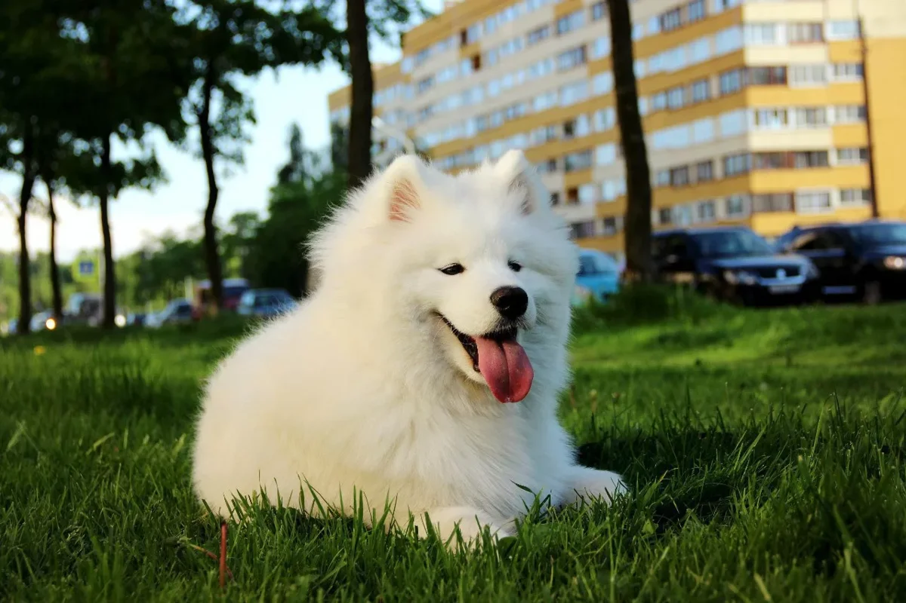

Самоедская собака (самоед, самоедская лайка, самоедский шпиц)
— одна из древнейших пород собак. Относится к примитивным
(аборигенным) породам. По одной из версий, самоед ведёт
происхождение от ненецкой лайки. В настоящее время существует
7 стандартов породы самоед: английский, FCI, американский,
канадский, австралийский, новозеландский и ЮАР.
 Померанский шпиц